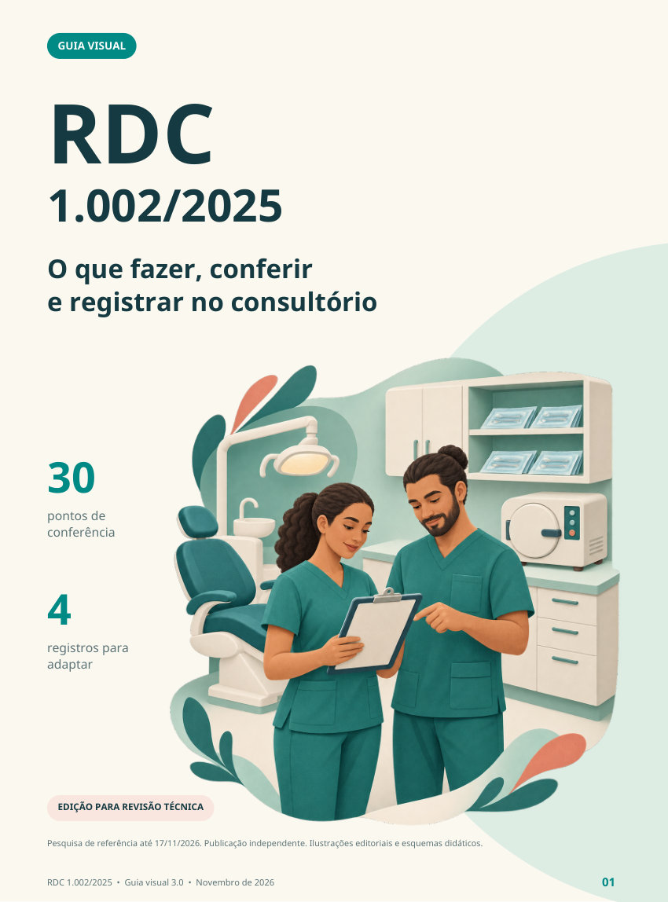

Entender sem se perder
Conteúdo dividido por assuntos, com textos curtos, ilustrações e referências para consulta.
Entenda as novas normas e veja o que conferir no seu serviço. Comece pelo e-book visual e conheça o guia interativo para organizar a situação do seu ambiente.
No guia, suas respostas mostram o que já foi conferido, o que precisa de ajuste e o que ainda precisa ser verificado. Cada necessidade pode virar uma ação com responsável e prazo.

Para ler, consultar
e conversar com a equipe.
Documentos, estrutura, processamento e registros: entenda os temas da RDC no e-book e use o guia para registrar como esses cuidados estão no seu ambiente.
Conteúdo dividido por assuntos, com textos curtos, ilustrações e referências para consulta.
Um checklist editorial com 30 pontos para identificar o que está conferido e o que merece atenção.
Um roteiro de organização e modelos para definir ações, responsáveis, prazos e registros.
Cirurgiões-dentistas ASB e TSB Responsáveis técnicos Gestão de clínicas
Veja exemplos do e-book sobre os temas da RDC. Depois da leitura, o guia interativo ajuda a transformar a conferência em um acompanhamento organizado.
Papéis da equipe, pastas de rotinas, enquadramento do ambiente e fluxo do material.
Limpeza, preparo, embalagem, esterilização, controles e guarda.
Cuidados da rotina, histórico dos equipamentos e organização dos registros.
30 pontos de conferência e quatro modelos para adaptar com o responsável técnico.
PÁGINA REAL DO MATERIAL Toque para ampliar
Quatro modelos de apoio para organizar o que a equipe faz e precisa conseguir recuperar.
Ação, responsável, prazo e evidência de conclusão.
Campos para registrar os elementos da carga e seus controles.
Um modelo para relacionar atendimento, pacote, lote e profissional.
Identificação, manutenção, condição de uso e próxima verificação.
Modelos de apoio para adaptação aos procedimentos e aprovação no serviço. Os exemplos visuais acima são ilustrativos.
Veja o que está incluído e como funciona a entrega.
Na opção de R$ 9,97, você recebe apenas o e-book visual em PDF: 19 páginas, 30 pontos de conferência e quatro modelos de registro. A opção e-book + guia acrescenta o cadastro do ambiente, a conferência dos 51 indicadores e o painel com plano de ação. O guia avulso custa R$ 29,90 e não inclui o e-book. Para levar os dois por R$ 39,87, adicione o guia no carrinho do e-book antes de pagar.
A entrega é feita pela Hotmart após a aprovação do pagamento. Use o e-mail informado na compra e siga as instruções de acesso disponibilizadas pela plataforma.
Não. O PDF pode ser consultado em celular, tablet ou computador compatível. A impressão é opcional.
Não. É um material educativo independente. A aplicação depende da atividade, das condições reais do ambiente e da avaliação do responsável técnico, incluindo os requisitos locais pertinentes.
O e-book explica os temas da RDC e oferece material de consulta. No guia, você registra como está o seu ambiente, confere os indicadores por etapas, identifica necessidades e organiza ações. Os dados ficam na conta para acompanhamento; o acesso ao guia é por 12 meses. Você pode comprar somente o e-book, somente o guia ou os dois. Para a opção com os dois, selecione o guia como oferta adicional no carrinho do e-book.
A oferta atual tem prazo de sete dias para solicitar reembolso. Confira as condições no checkout antes de concluir a compra. Após a compra, use o ambiente da Hotmart para consultar o pedido e solicitar atendimento ou reembolso.